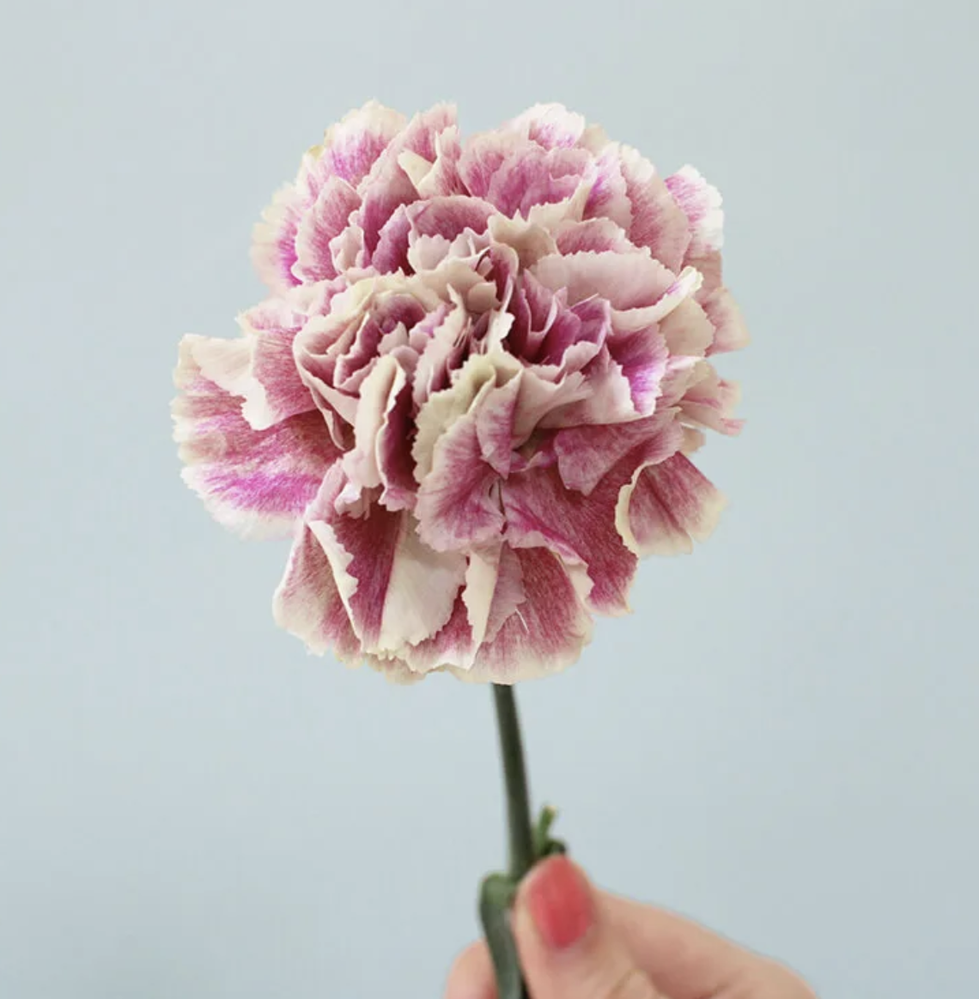
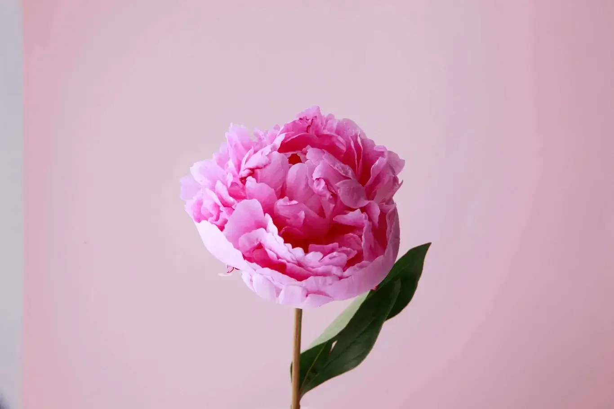
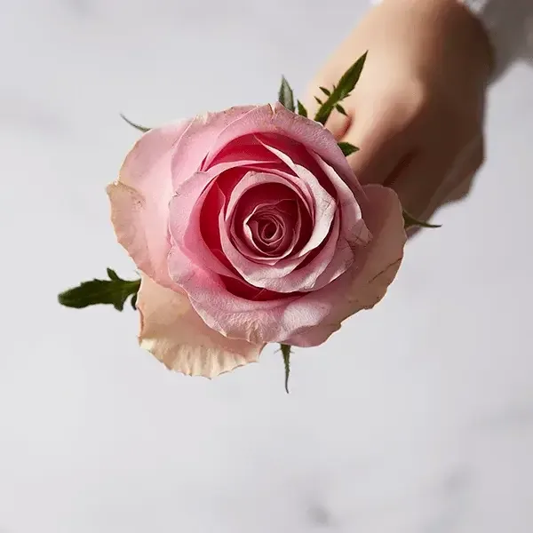
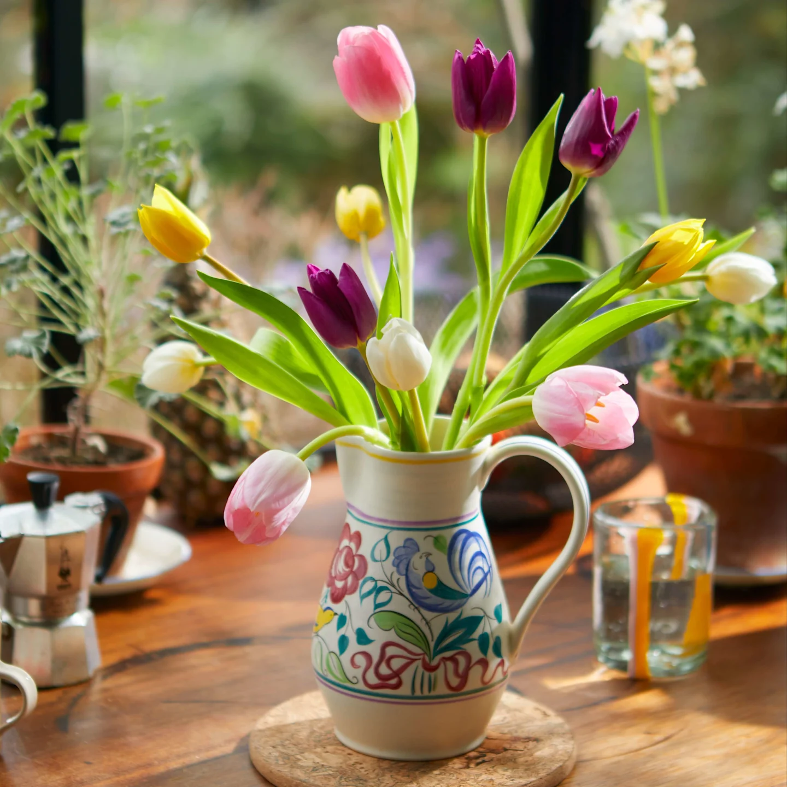

Carnation Flower
Carnations are a favourite for their beautifully ruffled petals, long-lasting blooms, and delightful sweet and spicy scent. They come in a fantastic array of colours, brightening up any bouquet or floral display. Known to symbolise love and deep fascination, carnations are a top pick for everything from stunning floral arrangements to charming boutonnieres. Plus, they hold a special place as the birth month flower for January, making them an extra meaningful gift at the start of the year.

Peony Flower
Peonies are all about lush abundance and fluffy petals. They have a luxurious appearance and a sweet fragrance. Peonies come in pink, red, white and yellow and represent wealth and honour, making them popular for special occasions. Peonies originally come from Asia, Southern Europe, and Western North America, but they are especially loved in Eastern cultures, like in China where they are called the "king of flowers."

Rose Flower
Roses are the queens of the flower world, popular for their classic beauty and romantic symbolism. They come in a rainbow of colours, with each colour telling a different story of love, friendship, or respect. They are also associated with people born in June. Roses are known for their layered petals and rich fragrance, which has made them a favourite in perfumery for centuries. Whether in a lavish bouquet or a single stem, roses capture hearts everywhere.

Tulip Flower
Tulips are springtime stars with their clean, elegant shape and a cheerful palette of colours. These bulbs are some of the earliest to bloom in spring, making them a symbol of rebirth and new beginnings. Tulips are native to Central Asia, but gained popularity in the Netherlands in the 17th century, sparking "Tulip Mania" during which bulbs were incredibly valuable. Tulips are perfect for gardens, pots, and as cut flowers in stunning floral arrangements.